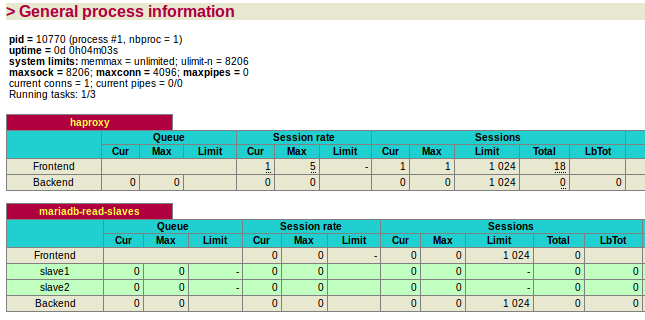

HAProxy: load balance your traffic
Contents
| Software version | 1.4.24 |
|---|---|
| Operating System | Debian 7 |
| Website | HAProxy Website |
| Last Update | 21/01/2015 |
| Others | |
{kind=link}
1 Introduction
HAProxy is an open source TCP/HTTP load balancer, commonly used to improve the performance of web sites and services by spreading requests across multiple servers. Its name stands for High Availability Proxy. It is written in C and has a reputation for being fast, efficient (in terms of processor and memory usage) and stable.
HAProxy is used by a number of high-profile websites including Stack Overflow, Reddit, Tumblr, and Twitter and is used in the OpsWorks product from Amazon Web Services.
2 Installation
In Debian 7, HAProxy is unfortunately not present. So you need to activate backports:
| |
deb http://ftp.fr.debian.org/debian/ wheezy-backports main deb-src http://ftp.debian.org/debian/ wheezy-backports main |
Then you can install HAProxy:
| |
aptitude update aptitude install haproxy |
3 Configuration
You can have several kind of configuration as HAProxy knows how to check specific things like MySQL, even if it's specialized on http and tcp protocols.
3.1 HTTP
Here is a good configuration for HTTP pages with sticky sessions:
| |
global
# log redirection (syslog)
log /dev/log local0
log /dev/log local1 notice
# maximum of connexions for haproxy
maxconn 4096
# chroot for security reasons
chroot /var/lib/haproxy
# user/group for haproxy process
user haproxy
group haproxy
# act as a daemon
daemon
defaults
# use gloval log declaration
log global
# default check type
mode http
# logs which servers requests go to, plus current connections and a whole lot of other stuff
option httplog
# only log failed connexions
# retry 3 times before setting node as failed
# redispatch traffic to other servers
option dontlognull retries 3 option redispatch
# maximum connexion for the backend
maxconn 2000
# timeouts
contimeout 5000
clitimeout 50000
srvtimeout 50000
# check webservers for health, taking them out of the queue as necessary
option httpchk
# haproxy frontend
frontend http-in
bind *:80
# acl for each backends
acl is_deimosfr hdr_end(host) -i deimos.fr
acl is_mavrofr hdr_end(host) -i mavro.fr
use_backend deimosfr if is_deimosfr
use_backend mavrofr if is_mavrofr
default_backend deimosfr
# backend1
backend deimosfr
# use sticky session to stick clients on the same server
cookie SERVERID insert indirect
balance roundrobin
# cookie SERVERID is "www1"
server www1 192.168.0.1:8080 cookie www1 check
# cookie SERVERID is "www2"
server www2 192.168.0.2:8080 cookie www2 check
# backend2
backend mavrofr
cookie SERVERID insert indirect
balance roundrobin
server www1 192.168.0.1:8080 cookie www1 check
server www2 192.168.0.2:8080 cookie www2 check |
3.2 MySQL/MariaDB
Here is a load balancing version for 2 MySQL nodes:
| |
global
# log redirection (syslog)
log /dev/log local0
log /dev/log local1 notice
# maximum of connexions for haproxy
maxconn 4096
# chroot for security reasons
chroot /var/lib/haproxy
# user/group for haproxy process
user haproxy
group haproxy
# act as a daemon
daemon
defaults
# use gloval log declaration
log global
# default check type
mode http
# only log when closing session
option tcplog
# only log failed connexions
# retry 3 times before setting node as failed
# redispatch traffic to other servers
option dontlognull retries 3 option redispatch
# maximum connexion for the backend
maxconn 1024
# timeouts
contimeout 5000
clitimeout 50000
srvtimeout 50000
# enable web check health interface on port 80
listen haproxy 0.0.0.0:80
mode http
stats enable
# set credentials
stats auth user:password
# loadbalance on slaves
listen mariadb-read-slaves 0.0.0.0:3306
# use tcp method
mode tcp
# round robin mechanism
balance roundrobin
# tcp keepalive (pipelining) on both side (clt/srv)
option tcpka
# perform mariadb connexion with haproxy user
option mysql-check user haproxy
# set all read only nodes
# inter: interval of check in milliseconds
server slave1 10.0.0.2:3306 check inter 1000
server slave2 10.0.0.3:3306 check inter 1000 |
3.3 Offloading SSL
SSL Offloading permit to decrypt SSL and forward traffic to a web server without SSL. This can be very useful used with a caching server like Varnish (you can also do it with Nginx).
To start, create a SSL folder and concatenate all your certificates in one:
| |
mkdir /etc/haproxy/ssl cat server.crt server.key ca.pem sub.class2.server.ca.pem > /etc/haproxy/ssl/server-unified.pem |
| |
| If you have multiple domain name, concatenate all in the same server-unified.pem file |
Then you can apply this kind of configuration:
| |
global
log /dev/log local0
log /dev/log local1 notice
chroot /var/lib/haproxy
stats socket /run/haproxy/admin.sock mode 660 level admin
stats timeout 30s
user haproxy
group haproxy
daemon
# Default SSL material locations
ca-base /etc/ssl/certs
crt-base /etc/ssl/private
# Default ciphers to use on SSL-enabled listening sockets.
# For more information, see ciphers(1SSL).
ssl-default-bind-ciphers kEECDH+aRSA+AES:kRSA+AES:+AES256:RC4-SHA:!kEDH:!LOW:!EXP:!MD5:!aNULL:!eNULL
ssl-default-bind-options no-sslv3
defaults
log global
mode http
# Add X-Forwarded-For headers for each requests
option forwardfor
# Close connections but maintain keep-alives (faster)
option http-server-close
option httplog
option dontlognull
timeout connect 5000
timeout client 50000
timeout server 50000
errorfile 400 /etc/haproxy/errors/400.http
errorfile 403 /etc/haproxy/errors/403.http
errorfile 408 /etc/haproxy/errors/408.http
errorfile 500 /etc/haproxy/errors/500.http
errorfile 502 /etc/haproxy/errors/502.http
errorfile 503 /etc/haproxy/errors/503.http
errorfile 504 /etc/haproxy/errors/504.http
listen admin_stats 127.0.0.1:8080 mode http
stats enable
stats uri /haproxy-stats
stats refresh 10s
stats realm HAProxy\ Statistics
stats auth <login>:<password>
frontend frontend-https
bind <private_ip>:443 ssl crt /etc/haproxy/ssl/server-unified.pem reqadd X-Forwarded-Proto:\ https
default_backend ssl-backend
backend ssl-backend
# Redirect http -> https
#redirect scheme https if !{ ssl_fc }
server <server_name> <server_ip_to_forward>:80 check maxconn 2048 |
Edit and replace highlighted lines with your wished information. Then restart HAProxy to apply the new configuration.
4 Web interface
If you activate the web interface, you can get multiple informations (http://<server_ip>/haproxy?stats):

{kind=link}